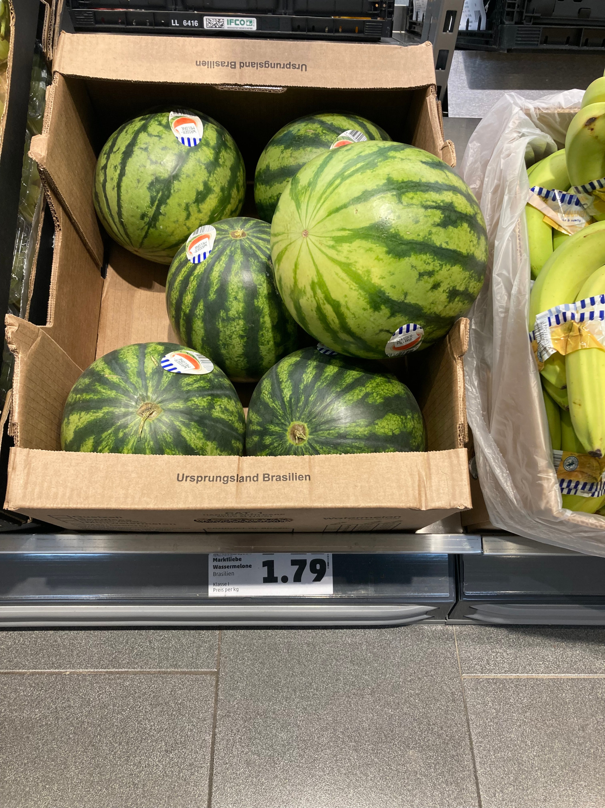
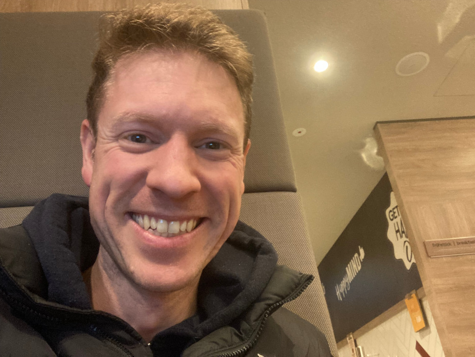
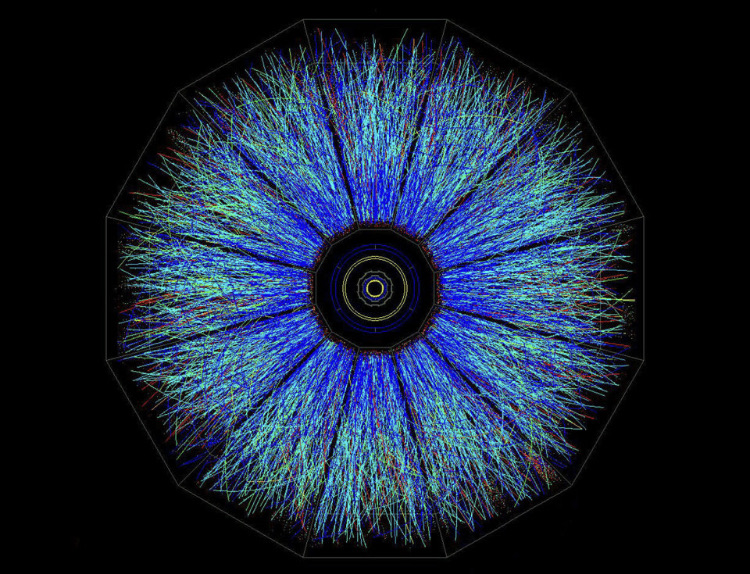
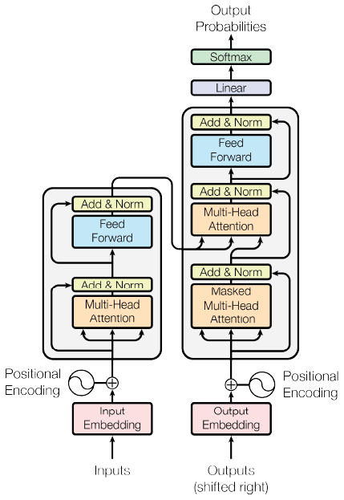
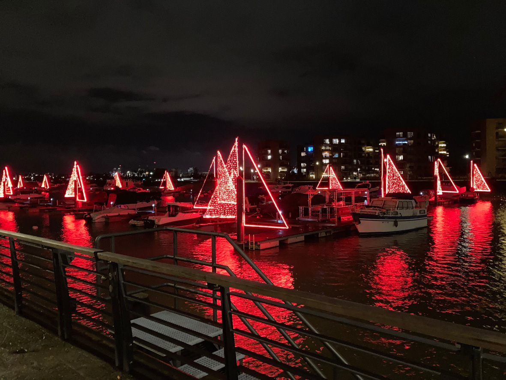
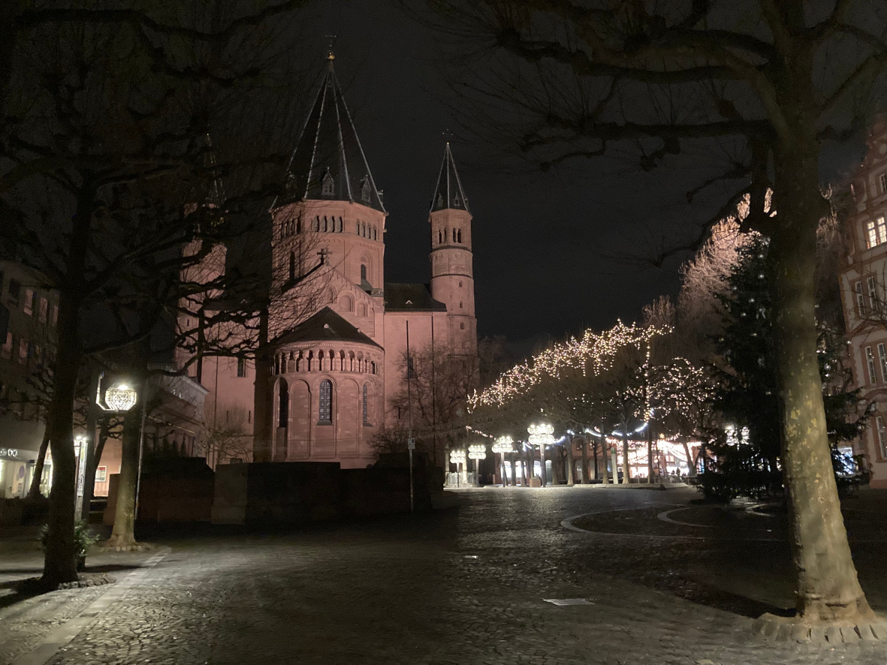

8 January 2024
Spent most of today in a library in Frankfurt. Beautiful city. Also found that food is a lot cheaper here than in the UK. I was paying £5 for a large watermelon in the UK...
Yes, those are 1.79 euros each. And here is a selfie of me updating this blog. HAPPY MIND!!
Very interested in NASAs moon launch. Will be interesting to learn of the details about the anomaly. Congratulations to the teams at NASA for getting it to that stage and for the wins to come.
7 January 2024
Uploaded a business plan today, see it here.
Also looking for work in the form of 'idea consultancy'. If you or anyone you know want a problem solved, get in touch. no matter how big. Is time travel is your thing, let me know and we can discuss your current knowledge base and I'll help you take it further.
Saw a beautiful image of an atom with today's most advanced imaging technology. Here it is...
6 January 2024
New way of looking at things... so have you ever noticed that when an atomic clock goes East around the earth it is slower, than a stationary clock, and if you go Westwards around the world, it goes faster? Well here is me thinking, if they both return to the same place, then they have travelled the equivalent distance from the origin, so why? What makes this weird to me, is that if time is relative to the effect of gravity, which it is, then why again would the direction matter? I understand that there is a possibky a link between particle spin and the electromagnetic fields around them. From this I have asked myself if it possible that gravity is a by product of these spins, and there is some kind of constant bias of spin in matter, meaning there is a constant field. Does this cause gravity? Is the direction of this field responsible to the different relative rates of change of time?
Also finished the attention calculation part of the transformer, currently in an unwrapped state, here.
Looking to head off from Germany... had a bit of a run in with police (on a train without a ticket) and they were looking to give me a record for fraud. Very upset by this, I have never committed fraud in my life. Not interested in that sort of thing given I was on the way to the UN Court in Switzerland about my children. I had no euros left and it was the very early morning hence the freeride attempt, sorry... Urgent and important priority.
5 January 2024
Looking to return to England and thinking about funds growing thinner than I would like to play safe, I booked a coach ticket to London. Halfway back I decided to divert to the south to get to Geneva so I could make it easier to interact with the Human Rights Court as 4 of my applications did not appear to go through. I wanted to give them the opportunity to go direct. I was also going to look into becoming involved with the Human Rights departments
 I don't know why, but I feel it is a good time to state publically that Jan Baloyo and I were never married, and that I have legal documentation stating that I have parental responsibility (I am the legal parent) of both my children, Emilia and Arthur. My ex partner is a Christian (although a very bad one when it comes to her behaviour), and I appreciate anyone that has provided care for my children, but I need my children, and my children definately need me. I like being me and doing my thing by my rules (using the law as my guide). I have submitted an application to the United Nations Human Rights Court, and I received notice they had receieved it and would be looking at it in January. I look forward to seeing what comes of it given the severity of the case.
4 January 2024
I have been in Berlin the last couple of days, and had a nice enough time, however I feel it is time to head of to somewhere else... not sure where yet. Looking for investment (circa $300,000) in shares that are due to go up once a set of climate bonds have completed in their sale (about 6 months). If you know anyone get in touch. The idea behind this is to start a project 6 months early that the bonds shall pay.
I have been working towards building my own LLM from scratch and earlier today, completed a main section of the key function within the LLM.
30 December 2023
Travelling across East Anglia to pick up a rucksack from storage since I lost my house 3 years ago in the court proceedings. I love camping, so wanted to do the appropriate Scout thing and 'Be Prepared'! Camo green though... It's been 2.5 years since I have been in the Army.
I took another look at my neuroscience to computer science convertion documentation. I need to explain some of the notation I have used in my algorithm. Then this evening I find there is a new piece of hardware that better represents a synapse than the memristor... this could be very exciting! However, quantum machine learning, climate solutions and personalised healthcare are the way forwards. Space is something I dream of, I mean, imagine being in Star Trek!
Court Updates
I have submitted an application to the United Nations Human Rights Council. I have not seen my children for 3 Christmas' now. Not even had a phone call... This is an absurd injustice for any child.
I have updated a court document that I am looking to submit to the Supreme Court.
Background
A lot of my time since June 2019 has been spent focused on Court hearing and learning about family law. I have attempted to complete my PhD, but have been unable to deal with the disruption of my family and seeing my children suffer, for example, my 2 year old daughter collapsing to the floor in stress being unable to speak or move for 20 minutes. It was more than I could deal with and function properly. I found the only thing I could do and function effectively was when working on court activities. I did consider a career in family law for a while...
I was 6 months away from finishing my PhD, I completed most of a PGCE, and then spent 6 months full time learning about family law and trying to finish my PhD.
I started work again but I was a little broken for a while. I had a pretty awful experience for a time, with my children and I not being allowed to see each other, and I figured my ex partner was having several relationships, while denying this to the court. Weird when your daughter asks her mum 'Do you llke this daddy?' (while pointing to me). Erm... so you are not lying to the court again are you Jan? How many times have you committed perjury now? It was actually in every single hearing we had that I recall her lying to the court until she got representation.
What I find odd, is how a mother can bite their own child to make them cry, lie to the court so blatently, and stil be awarded care of a child they didn't even like looking after. Ah yes, is this the point at which we say, the system goes in the mothers favour? Well, time to shake up said system - because it is now 2023, not 1800.
Court Updates
I've not seen my children since October 2020. The first sentence I heard my daughter say was, 'Daddy, I want to see you more, I want to play with you more, I want to cook with you more (pointing at the oven), I want to run with you more'. This was then followed up with death threats suggesting if I was to say or do certain things, I and/or my children will die. I gather false documentation of marriage have been submitted in order to gain funds, but then again, I've not been legally permitted to speak to the mother of my children to find out what's going on with her.